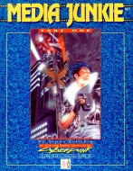

|  | Technical data |
| Scenario for the role-playing game Cyberpunk 2020, published by Ianus Games (Dream Pod 9) (1993) | |
| Theme | Alternate Reality: 10 mini-scenarios inspired by movies |
| Background quality | 4 / 5 |
| Scenario quality | 4 / 5 |
| Rules quality | - |
| Artworks quality | 4 / 5 |
| Writing quality | 4 / 5 |
Cut in two volumes (cf Media Junkie : Final Cut), this scenario is in fact a succession of themed stories. An employer wants to retrieve the original soundtracks of some 20th century films, and the PCs' journey to find these films bears a strange resemblance to the scenario of the latter. In this first volume, we have M, Plan 9 From Outer Space, Dracula, The Exorcist. Obviously, the atmosphere is close to fantastic, and creatures of the night are hiding in corners of the plot. Alternate Reality supplements such as Dark Metropolis, Night's Edge and Grimm's Cybertales are therefore recommended. The advantage of the structure of this scenario is that it can be played as one big campaign, or as several separate short stories.
{kind=link}